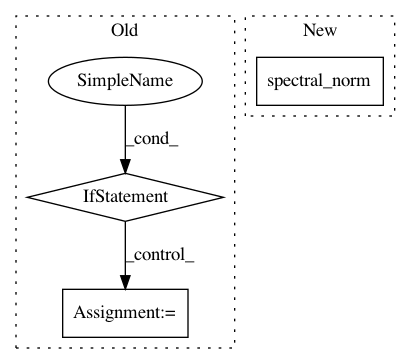

3312380c4983dc6f7aff4488ccdd2c6167803c30,models/modules/shift_unet.py,InceptionUnetSkipConnectionBlock,__init__,#InceptionUnetSkipConnectionBlock#Any#Any#Any#Any#Any#Any#Any#Any#,637
Before Change
down = [downrelu, downconv, downnorm]
up = [uprelu, upconv, upnorm]
if use_dropout:
model = down + [submodule] + up + [nn.Dropout(0.5)]
else:
model = down + [submodule] + up
self.model = nn.Sequential(*model)
def forward(self, x):
if self.outermost: // if it is the outermost, directly pass the input in.
After Change
unet_block = UnetSkipConnectionBlock(ngf, ngf * 2, input_nc=None, submodule=unet_shift_block,
norm_layer=norm_layer, use_spectral_norm=use_spectral_norm)
unet_block = UnetSkipConnectionBlock(output_nc, ngf, input_nc=input_nc, submodule=unet_block, outermost=True,
norm_layer=norm_layer, use_spectral_norm=use_spectral_norm)
self.model = unet_block
def forward(self, input):
return self.model(input)
// Mention: the TripleBlock differs in `upconv` defination.
// "cos" means that we add a `innerCos` layer in the block.
class UnetSkipConnectionShiftBlock(nn.Module):
def __init__(self, outer_nc, inner_nc, opt, innerCos_list, shift_list, mask_global, input_nc, \
In pattern: SUPERPATTERN
Frequency: 3
Non-data size: 3
Instances
Project Name: Zhaoyi-Yan/Shift-Net_pytorch
Commit Name: 3312380c4983dc6f7aff4488ccdd2c6167803c30
Time: 2019-02-27
Author: yanzhaoyi@outlook.com
File Name: models/modules/shift_unet.py
Class Name: InceptionUnetSkipConnectionBlock
Method Name: __init__
Project Name: sony/nnabla
Commit Name: 6763a8e3e6561731a3ebeca79de7841588603283
Time: 2021-02-26
Author: nnabla@example.com
File Name: python/src/nnabla/parametric_functions.py
Class Name:
Method Name: spectral_norm
Project Name: Zhaoyi-Yan/Shift-Net_pytorch
Commit Name: 3312380c4983dc6f7aff4488ccdd2c6167803c30
Time: 2019-02-27
Author: yanzhaoyi@outlook.com
File Name: models/modules/shift_unet.py
Class Name: InceptionShiftUnetSkipConnectionBlock
Method Name: __init__